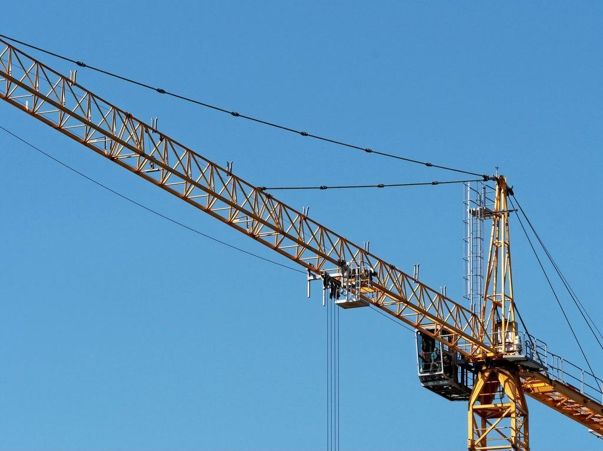

Om Andra Varvet
Petra Holm var depåchef på ett rikstäckande hyrföretag i tolv år och såg hur maskiner såldes efter fem år, när de fortfarande hade halva livet kvar. 2020 köpte hon tolv av dem på en auktion, ställde in dem i en hyrd hall på Viared och gav dem nya slangar, nya tänder och ny färg på skoporna. Mekanikern Dragan Ilić, som hon hade jobbat med i tio år, följde med.
Våra maskiner är mellan sex och tolv år gamla, har gått igenom vår verkstad och kostar ungefär 40 procent mindre att hyra än en ny.
Petra Holm var depåchef på ett rikstäckande hyrföretag i tolv år och såg hur maskiner såldes efter fem år, när de fortfarande hade halva livet kvar. 2020 köpte hon tolv av dem på en auktion, ställde in dem i en hyrd hall på Viared och gav dem nya slangar, nya tänder och ny färg på skoporna. Mekanikern Dragan Ilić, som hon hade jobbat med i tio år, följde med.
I dag är vi sex anställda med 70 maskiner. Ingen är nyare än sex år och ingen äldre än tolv. Vi har inga säljare och ingen showroom, kontoret är en bod i hallen och vi tar betalt med kort eller faktura. Det som inte sparas in är verkstaden: varje maskin går igenom 60 kontrollpunkter efter varje hyra.

Begagnat, genomgånget och billigare
Petra Holm var depåchef på ett rikstäckande hyrföretag i tolv år och såg hur maskiner såldes efter fem år, när de fortfarande hade halva livet kvar. 2020 köpte hon tolv av dem på en auktion, ställde in dem i en hyrd hall på Viared och gav dem nya slangar, nya tänder och ny färg på skoporna. Mekanikern Dragan Ilić, som hon hade jobbat med i tio år, följde med.
Senaste nytt


Vad ska hyras, och när?
Skriv maskin och datum, så bekräftar vi på sms inom en timme under öppettid.
- Telefon
- 070-174 06 88
- E-post
- petra@andravarvet.se
- Öppettider
- Mån–fre 6–17, lör 8–12
Kontakta oss
- Kontor
- Viaredsvägen 18
504 64 Borås - Telefon
- 070-174 06 88
- E-post
- petra@andravarvet.se
- Öppettider
- Mån–fre 6–17, lör 8–12